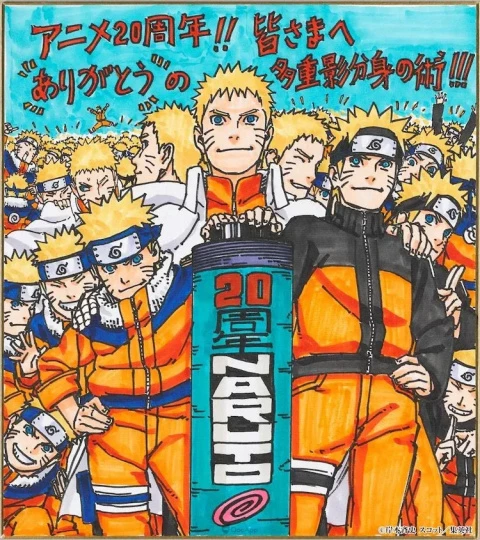

Naruto: L'un des meilleurs anime de tout les temps (20 ans)
L'univers de Naruto est un univers de fiction créé par Masashi Kishimoto dans lequel se déroule l’histoire du shōnen manga Naruto, et des anime associés.
Dans l’univers de Naruto, issu de nombreuses influences, les protagonistes principaux sont des ninjas animés d’une force spirituelle appelée chakra, qui leur permet d’utiliser toute une palette de techniques de combat (jutsu) fictives, variant selon l’utilisateur. En complément à cette originalité, l’apparence de ces ninjas est loin des stéréotypes habituels du Japon féodal auxquels la série emprunte cependant de nombreuses notions, les mélangeant avec certaines venues du shintoïsme, du bouddhisme, ou même du taoïsme et de l’hindouisme.
Les ninjas sont organisés en villages cachés, servant leur pays par des missions diverses et variées lorsqu’ils ne sont pas en guerre. Chaque village a sa propre organisation interne, et le chef, le plus puissant des ninjas du village, appelé kage, possède une certaine autonomie, même s’il est nommé par le daimyo, représentant le commandement civil du pays, et auquel il reste subordonné.
La hiérarchie suit les règles du shōnen, où les jeunes sont formés par leurs aînés.

En 2019, le tirage total de la série s'élève à plus de 250 millions d'exemplaires en circulation dans le monde, ce qui en fait la quatrième série de mangas la plus vendue de l'histoire. Plus de la moitié du tirage total était au Japon, le reste provenant de 46 pays et régions7,8. Dans l'ensemble, le manga a été bien accueilli au Japon et aux États-Unis comme dans le reste du monde. Lors de la sortie du volume 36 en 2006, le manga s'était déjà écoulé à plus de 71 millions d'exemplaires au Japon9, tandis qu'en 2008 le chiffre s'élevait à 89 millions10. En 2008, le volume 43 s'est vendu à plus d'1,1 million d'exemplaires et fut la 8e meilleure vente de l'année dans la catégorie bandes dessinées au Japon. Les volumes 41, 42 et 44 figurent également parmi les vingt premiers, mais sont moins bien classés que le volume 4311. Au total, le manga s'est vendu à 4 261 054 exemplaires au Japon en 2008, devenant ainsi la deuxième série la plus lue dans le pays12. Lors du premier semestre 2009, Naruto se classait comme la 3e meilleure vente de manga au Japon, vendu à 3,4 millions d'exemplaires13. Durant cette période, le volume 45 s'est hissé au 5e rang avec 1,1 million d'exemplaires vendus, tandis que le volume 46 s'est classé 9e, après s'être vendu 864 708 exemplaires, et le volume 44 à la 40e place14. Naruto est aussi l'un des plus grands succès de VIZ Media, son éditeur aux États-Unis15, et représente près de 10 % de ses ventes de mangas en 200616. En France, le tome 34 s'est hissé à la 5e place dans le classement 2008 des meilleures ventes de BD publié par Livre Hebdo/Ipsos, en se vendant à 133 000 exemplaires. Les tomes 35 et 36 figurent dans le top 10 aux 8e et 10e places et se sont vendus à 123 000 exemplaires pour le numéro 35 et 118 000 exemplaires pour le numéro 3617.
Pied de page